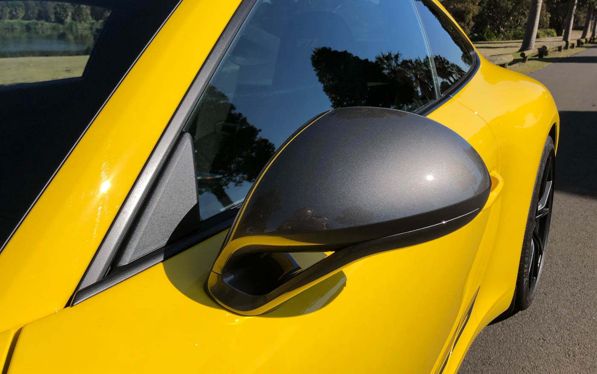

Retrovisor Porsche 911 Carrera Coupé
R$ 1799,90
10x de R$179,99
Descrição do produto
O produto é muito bom O produto é muito bomO produto é muito bomO produto é muito bom O produto é muito bom O produto é muito bom
O produto é muito bom O produto é muito bomO produto é muito bomO produto é muito bom O produto é muito
bom O produto é muito bomO produto é muito bom O produto é muito bomO produto é muito bomO produto é
muito bom O produto é muito
bom O produto é muito bomO produto é muito bom O produto é muito bomO produto é muito bomO produto é
muito bom O produto é muito
bom O produto é muito bomO produto é muito bom O produto é muito bomO produto é muito bomO produto é
muito bom O produto é muito
bom O produto é muito bomO produto é muito bom O produto é muito bomO produto é muito bomO produto é
muito bom O produto é muito
bom O produto é muito bom